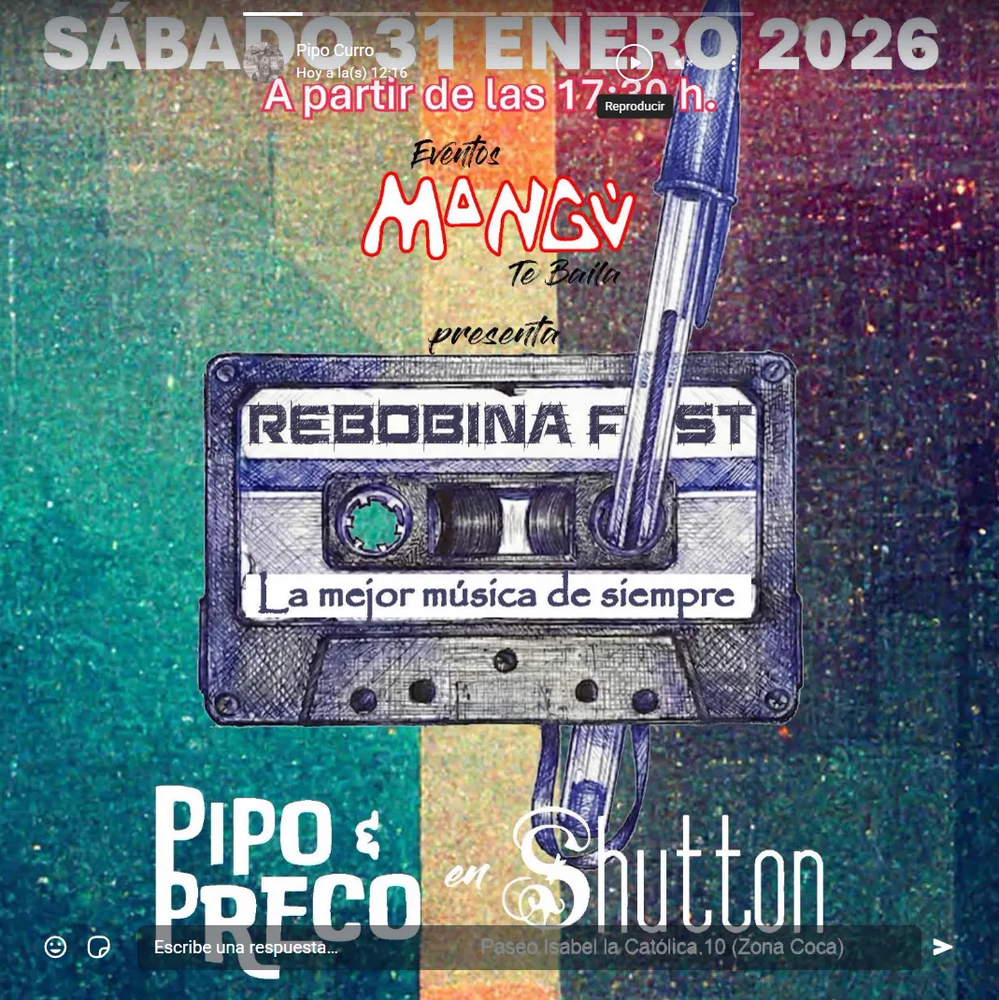
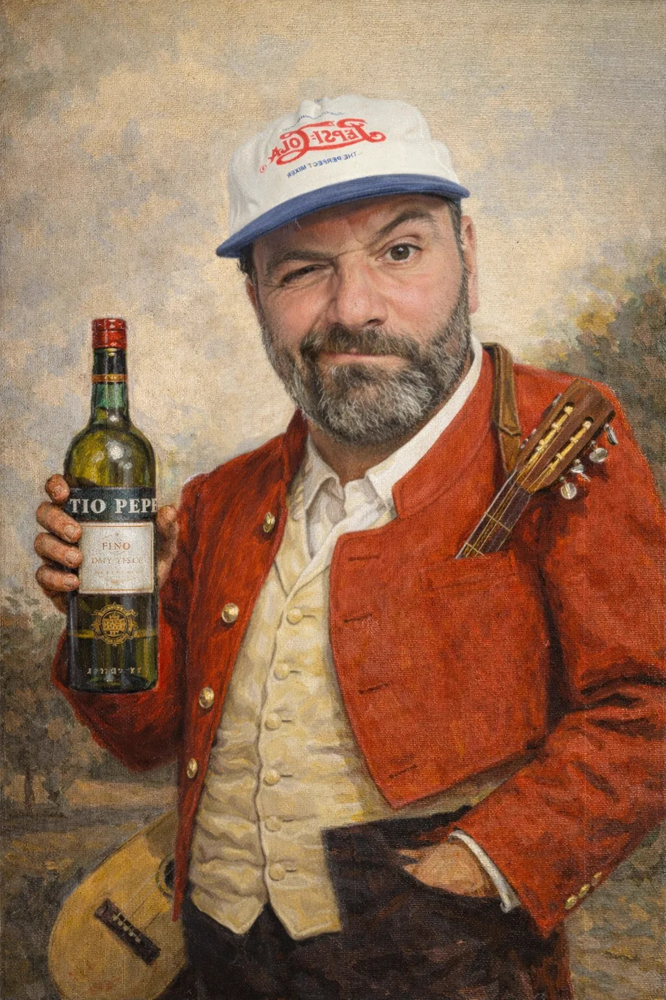
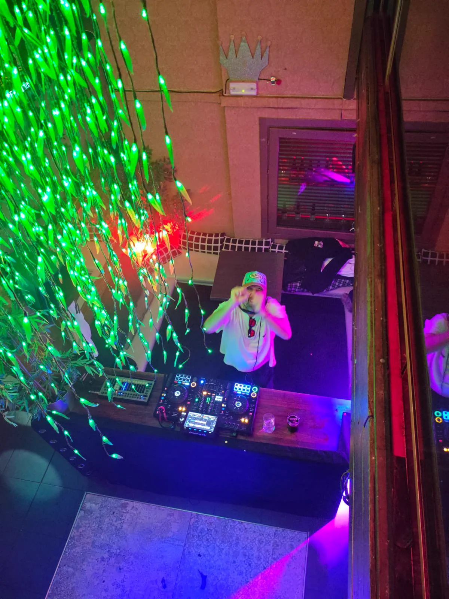
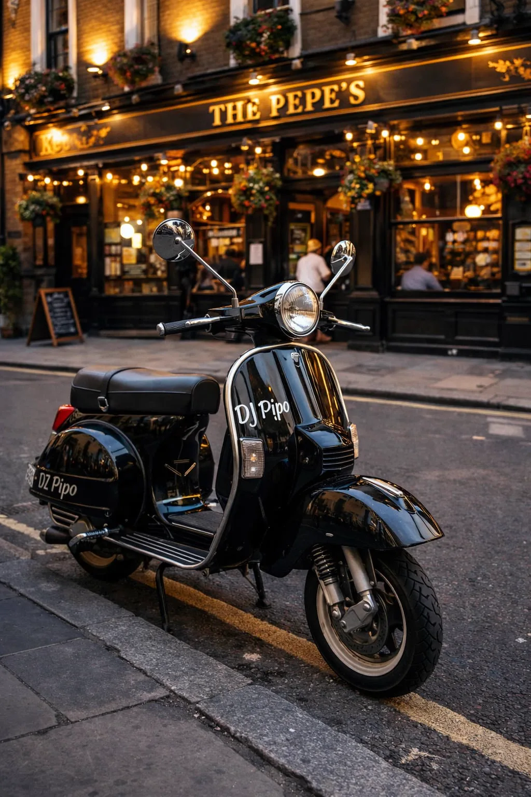
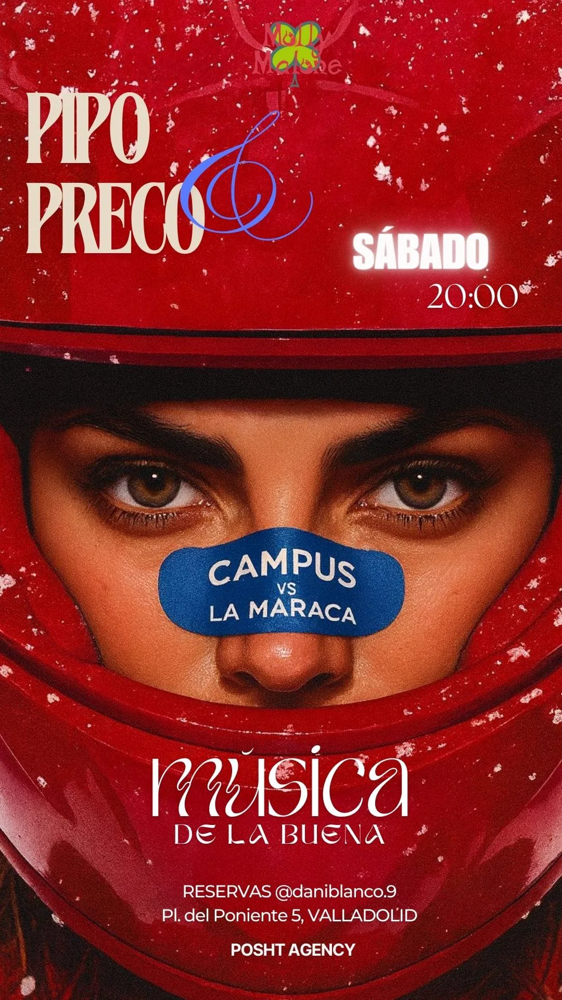
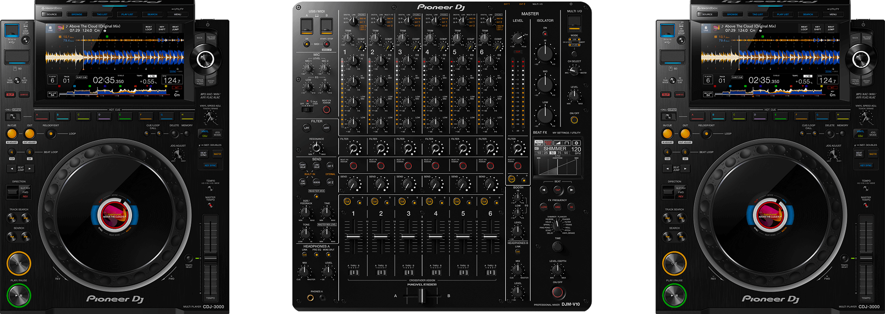

Festivales y macroeventos
Entrada visual potente, repertorio popular y una curva de energia preparada para publico amplio.

Duo DJ · Espana · 100-140 BPM
Una propuesta DJ abierta, reconocible y muy de directo: de la energia house al pop, rock, indie y latin para levantar cualquier pista.
Plantilla preparada por Mario Rodriguez y Guillermo Campos.
Show
La web puede presentar a Pipo & Preco como una marca musical flexible para festivales, fiestas populares, clubes y eventos privados. Su repertorio permite moverse entre electronica bailable, hits populares, guitarras y sonidos latinos sin perder ritmo.
Musica
Entrada visual potente, repertorio popular y una curva de energia preparada para publico amplio.
Bloques house, funk y latin con transiciones rapidas para mantener la pista arriba.
Formato adaptable, tono cercano y seleccion musical con margen para personalizar la experiencia.

Identidad
Esta plantilla esta preparada para evolucionar hacia una web final con biografia, calendario, videos, aftermovies, formulario de booking y press kit descargable. La estructura ya separa los argumentos clave para promotores, prensa y publico.
Fuente de datos inicialDirecciones visuales
Cambia el look desde el selector fijo y conserva la misma estructura de contenidos.
Iconos
Los controles permiten ensenar variantes de iconografia sin tocar el contenido: botones cuadrados, iconos redondeados, badges visibles o una version minima.
Fotos
El modo “Mas fotos” abre una galeria de imagenes para vender energia. El modo “Menos” deja una web mas sobria, ideal si aun falta material fotografico oficial.
Galeria
Seccion opcional para cuando tengan mas fotos oficiales de escenario, publico y backstage.



Rider tecnico
Configuracion de referencia: setup CDJ, mesa Pioneer y 3 reproductores. En la ficha original se indica que normalmente trabajan con XDJ-RX3.

Propuesta web
La siguiente fase seria reemplazar textos provisionales por biografia oficial, anadir videos/reels, calendario de fechas y un formulario conectado al correo de contratacion.
Press kit
Incluye bio corta, datos de booking, rider resumido y fotos/carteles optimizados.
Contacto
Formulario preparado para la web final. En esta maqueta abre el correo de booking con los datos básicos del evento para que sea fácil pedir disponibilidad.